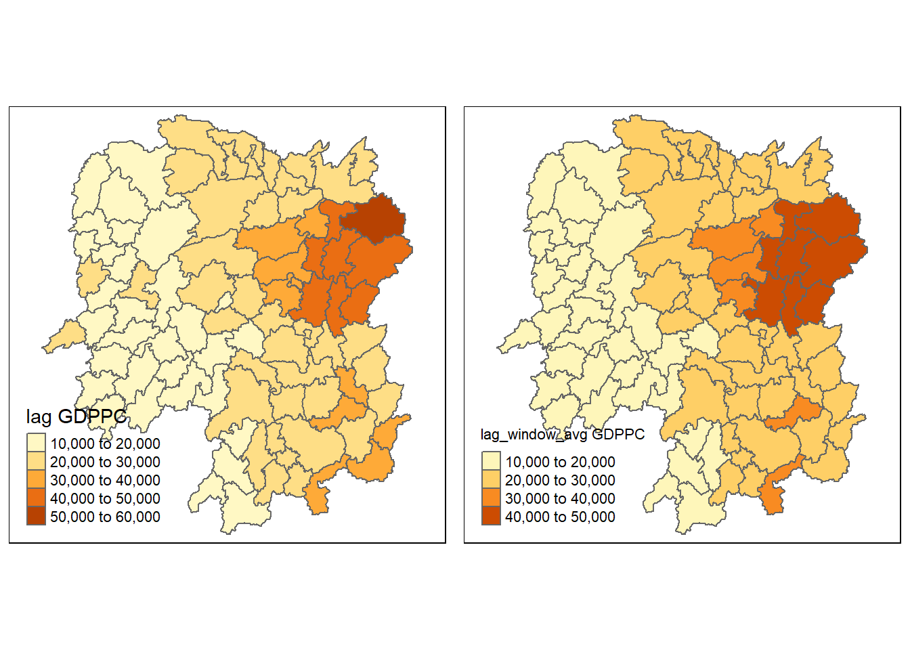

code block
pacman::p_load(sf, spdep, tmap, tidyverse, knitr, kableExtra, urbnthemes, ggplot2)Spatial Weights and Applications
A key aspect of spatial analysis is to measure the strength of the spatial relationships between spatial objects, or how these related spatial objects influence each other. This would allow us to further the analysis by computing spatial autocorrelation indices, implementing spatial econometrics techniques, studying the spatial distribution of observations, as well as performing spatial sampling or graph partitioning. Source: Handbook of Spatial Analysis
Computing spatial weights and neighbor links is a necessary part of this analysis process, and is the key focus of this exercise.
What are Spatial Weights?
Spatial weights are one way to represent graphs in geographic data science and spatial statistics and are widely used to represent geographic relationships between the observational units in a spatial dataset.
pacman::p_load(sf, spdep, tmap, tidyverse, knitr, kableExtra, urbnthemes, ggplot2)Two datasets will be used in this exercise:
hunan <- st_read(dsn = "data/geospatial",
layer = "Hunan")Reading layer `Hunan' from data source
`C:\haileycsy\ISSS624-AGA\Hands-on_Ex\hoe2\data\geospatial'
using driver `ESRI Shapefile'
Simple feature collection with 88 features and 7 fields
Geometry type: POLYGON
Dimension: XY
Bounding box: xmin: 108.7831 ymin: 24.6342 xmax: 114.2544 ymax: 30.12812
Geodetic CRS: WGS 84hunan2012 <- read_csv("data/aspatial/Hunan_2012.csv")By performing a left_join(), the geospatial dataframe hunan will be updated with attribute fields of hunan2012
hunan <- left_join(hunan, hunan2012) %>%
select(1:4, 7, 15)head(hunan,10) %>%
kbl() %>%
kable_styling(
full_width = F,
bootstrap_options = c("condensed", "responsive"))| NAME_2 | ID_3 | NAME_3 | ENGTYPE_3 | County | GDPPC | geometry |
|---|---|---|---|---|---|---|
| Changde | 21098 | Anxiang | County | Anxiang | 23667 | POLYGON ((112.0625 29.75523... |
| Changde | 21100 | Hanshou | County | Hanshou | 20981 | POLYGON ((112.2288 29.11684... |
| Changde | 21101 | Jinshi | County City | Jinshi | 34592 | POLYGON ((111.8927 29.6013,... |
| Changde | 21102 | Li | County | Li | 24473 | POLYGON ((111.3731 29.94649... |
| Changde | 21103 | Linli | County | Linli | 25554 | POLYGON ((111.6324 29.76288... |
| Changde | 21104 | Shimen | County | Shimen | 27137 | POLYGON ((110.8825 30.11675... |
| Changsha | 21109 | Liuyang | County City | Liuyang | 63118 | POLYGON ((113.9905 28.5682,... |
| Changsha | 21110 | Ningxiang | County | Ningxiang | 62202 | POLYGON ((112.7181 28.38299... |
| Changsha | 21111 | Wangcheng | County | Wangcheng | 70666 | POLYGON ((112.7914 28.52688... |
| Chenzhou | 21112 | Anren | County | Anren | 12761 | POLYGON ((113.1757 26.82734... |
GDPPC Refers to Gross Domestic Product per capita, which measures a country’s economic output per person. To visualise the distribution of GDPPC as a cloropleth map, qtm() of tmap package can be used.
# Basemap without GDPPC mapping
basemap <- tm_shape(hunan) +
tm_polygons() +
tm_text("NAME_3", size = .5)
# Cloropleth map
gdppc <- qtm(hunan, "GDPPC")
#Place maps side-by-side
tmap_arrange(basemap,
gdppc,
asp = 1,
ncol = 2)
An important concept in spatial analysis is that of a neighborhood, which refers to those data points that we consider to be proximate to a given focal data point. With area-based vector data (polygons), there are multiple ways to measure proximity:
Contiguity-based neighbors consider neighboring polygons to be those that “touch” a focal polygon, and are derived in spdep package with the poly2nb() function
Distance-based neighbors are those within a given proximity threshold to a focal polygon; distances are measured between polygon centroid using the knn2nb() function
To use this information in statistical analysis, it’s often necessary to compute these relationships between all pairs of observations. This means building a topology —- a mathematical structure that expresses the connectivity between observations —- that we can use to examine the data. A neighborhood matrix is a binary matrix that indicates whether pairs of locations are neighbors or not, expressing this topology of relations with weights 1 and 0.
Defining a neighbourhood in the sense of contiguity is often used to study demographic and social data, in which it may be more important to be on either side of an administrative boundary than to be located at a certain distance from one another.
Contiguity happens when two spatial units share a common border.
The code chunk below computes a contiguity matrix based on Queen contiguity principle and returns a neighbor list object:
wm_q <- poly2nb(hunan,
queen = TRUE)
summary(wm_q)Neighbour list object:
Number of regions: 88
Number of nonzero links: 448
Percentage nonzero weights: 5.785124
Average number of links: 5.090909
Link number distribution:
1 2 3 4 5 6 7 8 9 11
2 2 12 16 24 14 11 4 2 1
2 least connected regions:
30 65 with 1 link
1 most connected region:
85 with 11 linksThe summary report shows that:
For each polygon in our polygon object, wm_q lists all neighboring polygons. For example, to see the neighbors for polygon #1 in the object:
wm_q[[1]][1] 2 3 4 57 85Polygon #1 has 5 neighbors.
We can retrieve the county name of Polygon ID=1 by using the code chunk below:
hunan$County[1][1] "Anxiang"To reveal the county names of the five neighboring polygons, the code chunk will be used:
hunan$NAME_3[c(2,3,4,57,85)][1] "Hanshou" "Jinshi" "Li" "Nan" "Taoyuan"# Store all neighbor polygon IDs in new variable
nb1 <- wm_q[[1]]
# Replace polygon IDs in the variable with respective GDPPC
nb1 <- hunan$GDPPC[nb1]
nb1[1] 20981 34592 24473 21311 22879The printed output above shows that the GDPPC of the five nearest neighbors based on Queen’s method are 20981, 34592, 24473, 21311 and 22879 respectively.
You can display the complete weight matrix by using str()
str(wm_q)List of 88
$ : int [1:5] 2 3 4 57 85
$ : int [1:5] 1 57 58 78 85
$ : int [1:4] 1 4 5 85
$ : int [1:4] 1 3 5 6
$ : int [1:4] 3 4 6 85
$ : int [1:5] 4 5 69 75 85
$ : int [1:4] 67 71 74 84
$ : int [1:7] 9 46 47 56 78 80 86
$ : int [1:6] 8 66 68 78 84 86
$ : int [1:8] 16 17 19 20 22 70 72 73
$ : int [1:3] 14 17 72
$ : int [1:5] 13 60 61 63 83
$ : int [1:4] 12 15 60 83
$ : int [1:3] 11 15 17
$ : int [1:4] 13 14 17 83
$ : int [1:5] 10 17 22 72 83
$ : int [1:7] 10 11 14 15 16 72 83
$ : int [1:5] 20 22 23 77 83
$ : int [1:6] 10 20 21 73 74 86
$ : int [1:7] 10 18 19 21 22 23 82
$ : int [1:5] 19 20 35 82 86
$ : int [1:5] 10 16 18 20 83
$ : int [1:7] 18 20 38 41 77 79 82
$ : int [1:5] 25 28 31 32 54
$ : int [1:5] 24 28 31 33 81
$ : int [1:4] 27 33 42 81
$ : int [1:3] 26 29 42
$ : int [1:5] 24 25 33 49 54
$ : int [1:3] 27 37 42
$ : int 33
$ : int [1:8] 24 25 32 36 39 40 56 81
$ : int [1:8] 24 31 50 54 55 56 75 85
$ : int [1:5] 25 26 28 30 81
$ : int [1:3] 36 45 80
$ : int [1:6] 21 41 47 80 82 86
$ : int [1:6] 31 34 40 45 56 80
$ : int [1:4] 29 42 43 44
$ : int [1:4] 23 44 77 79
$ : int [1:5] 31 40 42 43 81
$ : int [1:6] 31 36 39 43 45 79
$ : int [1:6] 23 35 45 79 80 82
$ : int [1:7] 26 27 29 37 39 43 81
$ : int [1:6] 37 39 40 42 44 79
$ : int [1:4] 37 38 43 79
$ : int [1:6] 34 36 40 41 79 80
$ : int [1:3] 8 47 86
$ : int [1:5] 8 35 46 80 86
$ : int [1:5] 50 51 52 53 55
$ : int [1:4] 28 51 52 54
$ : int [1:5] 32 48 52 54 55
$ : int [1:3] 48 49 52
$ : int [1:5] 48 49 50 51 54
$ : int [1:3] 48 55 75
$ : int [1:6] 24 28 32 49 50 52
$ : int [1:5] 32 48 50 53 75
$ : int [1:7] 8 31 32 36 78 80 85
$ : int [1:6] 1 2 58 64 76 85
$ : int [1:5] 2 57 68 76 78
$ : int [1:4] 60 61 87 88
$ : int [1:4] 12 13 59 61
$ : int [1:7] 12 59 60 62 63 77 87
$ : int [1:3] 61 77 87
$ : int [1:4] 12 61 77 83
$ : int [1:2] 57 76
$ : int 76
$ : int [1:5] 9 67 68 76 84
$ : int [1:4] 7 66 76 84
$ : int [1:5] 9 58 66 76 78
$ : int [1:3] 6 75 85
$ : int [1:3] 10 72 73
$ : int [1:3] 7 73 74
$ : int [1:5] 10 11 16 17 70
$ : int [1:5] 10 19 70 71 74
$ : int [1:6] 7 19 71 73 84 86
$ : int [1:6] 6 32 53 55 69 85
$ : int [1:7] 57 58 64 65 66 67 68
$ : int [1:7] 18 23 38 61 62 63 83
$ : int [1:7] 2 8 9 56 58 68 85
$ : int [1:7] 23 38 40 41 43 44 45
$ : int [1:8] 8 34 35 36 41 45 47 56
$ : int [1:6] 25 26 31 33 39 42
$ : int [1:5] 20 21 23 35 41
$ : int [1:9] 12 13 15 16 17 18 22 63 77
$ : int [1:6] 7 9 66 67 74 86
$ : int [1:11] 1 2 3 5 6 32 56 57 69 75 ...
$ : int [1:9] 8 9 19 21 35 46 47 74 84
$ : int [1:4] 59 61 62 88
$ : int [1:2] 59 87
- attr(*, "class")= chr "nb"
- attr(*, "region.id")= chr [1:88] "1" "2" "3" "4" ...
- attr(*, "call")= language poly2nb(pl = hunan, queen = TRUE)
- attr(*, "type")= chr "queen"
- attr(*, "sym")= logi TRUECompute the Rook contiguity matrix by altering queen argument of poly2nb() function to return a neighbor list object:
wm_r <- poly2nb(hunan,
queen = FALSE)
summary(wm_r)Neighbour list object:
Number of regions: 88
Number of nonzero links: 440
Percentage nonzero weights: 5.681818
Average number of links: 5
Link number distribution:
1 2 3 4 5 6 7 8 9 10
2 2 12 20 21 14 11 3 2 1
2 least connected regions:
30 65 with 1 link
1 most connected region:
85 with 10 linksThe summary report shows that:
A connectivity graph takes a point and displays a line connecting to each neighboring point. The current geospatial dataset only has polygons at the moment, so we will need to compute points in order to make our connectivity graphs. The most typical method for this will be using polygon centroids.
To get our longitude values we map the st_centroid function over the geometry column of us.bound and access the longitude value through double bracket notation [[]] and 1. This allows us to get only the longitude, which is the first value in each centroid.
longitude <- map_dbl(hunan$geometry, ~st_centroid(.x)[[1]])We do the same for latitude with one key difference. We access the second value per each centroid with [[2]].
latitude <- map_dbl(hunan$geometry, ~st_centroid(.x)[[2]])coords <- cbind(longitude, latitude)Check the first few observations to see if things are formatted correctly:
head(coords) longitude latitude
[1,] 112.1531 29.44362
[2,] 112.0372 28.86489
[3,] 111.8917 29.47107
[4,] 111.7031 29.74499
[5,] 111.6138 29.49258
[6,] 111.0341 29.79863plot(hunan$geometry,
border = "#ABA9C3")
plot(wm_q,
coords,
pch = 20,
cex = .7,
add = TRUE,
col= "salmon"
)plot(hunan$geometry, border="lightgrey")
plot(wm_r,
coords,
pch = 19,
cex = 0.6,
add = TRUE,
col = "#129490")par(mfrow = c(1,2))
# Queen
plot(hunan$geometry,
border = "lightgrey")
plot(wm_q,
coords,
pch = 20,
cex = .7,
add = TRUE,
col = "salmon",
main = "Queen Contiguity"
)
# Rook
plot(hunan$geometry, border="lightgrey")
plot(wm_r,
coords,
pch = 19,
cex = 0.6,
add = TRUE,
col = "#129490",
main = "Rook Contiguity")Several steps are needed to obtain a distance threshold or cut-off distance that will be used to define neighbors in the analysis. This cut-off distance is crucial for creating a weight matrix that reflects the spatial relationships between regions based on their proximity within this defined distance band.
knearneigh(coords) is used to find k nearest neighbors for each point in the spatial dataset defined by the coords variable. Returns: k-nearest neighbor object (kn object)
knn2nb() is then used to convert the k-nearest neighbor object (kn object) into a neighbors list (nb object). This nb object represents the spatial relationships between neighboring regions based on the k-nearest neighbors and returns a neighbor list object:
k1 <- knn2nb(knearneigh(coords))
k1Neighbour list object:
Number of regions: 88
Number of nonzero links: 88
Percentage nonzero weights: 1.136364
Average number of links: 1
Non-symmetric neighbours listnbdists() calculates the distances between neighboring regions defined by the neighbors list k1longlat = TRUE argument indicates that the distances should be calculated assuming longitude and latitude coordinates, and it returns the distances in kilometersunlist() flattens the result, converting it from a list structure to a simple numeric vectork1dists <- unlist(nbdists(k1, coords, longlat = TRUE))summary(k1dists) Min. 1st Qu. Median Mean 3rd Qu. Max.
24.79 32.57 38.01 39.07 44.52 61.79 The summary report shows that the largest first nearest neighbour distance is 61.79 km, so using this as the upper threshold gives certainty that all units will have at least one neighbour.
This is done using dnearneigh():
wm_d62 <- dnearneigh(
coords,
# specify lower and upper distance bands
0, 62,
longlat = TRUE)
wm_d62Neighbour list object:
Number of regions: 88
Number of nonzero links: 324
Percentage nonzero weights: 4.183884
Average number of links: 3.681818 The summary report shows that:
str(wm_d62)List of 88
$ : int [1:5] 3 4 5 57 64
$ : int [1:4] 57 58 78 85
$ : int [1:4] 1 4 5 57
$ : int [1:3] 1 3 5
$ : int [1:4] 1 3 4 85
$ : int 69
$ : int [1:2] 67 84
$ : int [1:4] 9 46 47 78
$ : int [1:4] 8 46 68 84
$ : int [1:4] 16 22 70 72
$ : int [1:3] 14 17 72
$ : int [1:5] 13 60 61 63 83
$ : int [1:4] 12 15 60 83
$ : int [1:2] 11 17
$ : int 13
$ : int [1:4] 10 17 22 83
$ : int [1:3] 11 14 16
$ : int [1:3] 20 22 63
$ : int [1:5] 20 21 73 74 82
$ : int [1:5] 18 19 21 22 82
$ : int [1:6] 19 20 35 74 82 86
$ : int [1:4] 10 16 18 20
$ : int [1:3] 41 77 82
$ : int [1:4] 25 28 31 54
$ : int [1:4] 24 28 33 81
$ : int [1:4] 27 33 42 81
$ : int [1:2] 26 29
$ : int [1:6] 24 25 33 49 52 54
$ : int [1:2] 27 37
$ : int 33
$ : int [1:2] 24 36
$ : int 50
$ : int [1:5] 25 26 28 30 81
$ : int [1:3] 36 45 80
$ : int [1:6] 21 41 46 47 80 82
$ : int [1:5] 31 34 45 56 80
$ : int [1:2] 29 42
$ : int [1:3] 44 77 79
$ : int [1:4] 40 42 43 81
$ : int [1:3] 39 45 79
$ : int [1:5] 23 35 45 79 82
$ : int [1:5] 26 37 39 43 81
$ : int [1:3] 39 42 44
$ : int [1:2] 38 43
$ : int [1:6] 34 36 40 41 79 80
$ : int [1:5] 8 9 35 47 86
$ : int [1:5] 8 35 46 80 86
$ : int [1:5] 50 51 52 53 55
$ : int [1:4] 28 51 52 54
$ : int [1:6] 32 48 51 52 54 55
$ : int [1:4] 48 49 50 52
$ : int [1:6] 28 48 49 50 51 54
$ : int [1:2] 48 55
$ : int [1:5] 24 28 49 50 52
$ : int [1:4] 48 50 53 75
$ : int 36
$ : int [1:5] 1 2 3 58 64
$ : int [1:5] 2 57 64 66 68
$ : int [1:3] 60 87 88
$ : int [1:4] 12 13 59 61
$ : int [1:5] 12 60 62 63 87
$ : int [1:4] 61 63 77 87
$ : int [1:5] 12 18 61 62 83
$ : int [1:4] 1 57 58 76
$ : int 76
$ : int [1:5] 58 67 68 76 84
$ : int [1:2] 7 66
$ : int [1:4] 9 58 66 84
$ : int [1:2] 6 75
$ : int [1:3] 10 72 73
$ : int [1:2] 73 74
$ : int [1:3] 10 11 70
$ : int [1:4] 19 70 71 74
$ : int [1:5] 19 21 71 73 86
$ : int [1:2] 55 69
$ : int [1:3] 64 65 66
$ : int [1:3] 23 38 62
$ : int [1:2] 2 8
$ : int [1:4] 38 40 41 45
$ : int [1:5] 34 35 36 45 47
$ : int [1:5] 25 26 33 39 42
$ : int [1:6] 19 20 21 23 35 41
$ : int [1:4] 12 13 16 63
$ : int [1:4] 7 9 66 68
$ : int [1:2] 2 5
$ : int [1:4] 21 46 47 74
$ : int [1:4] 59 61 62 88
$ : int [1:2] 59 87
- attr(*, "class")= chr "nb"
- attr(*, "region.id")= chr [1:88] "1" "2" "3" "4" ...
- attr(*, "call")= language dnearneigh(x = coords, d1 = 0, d2 = 62, longlat = TRUE)
- attr(*, "dnn")= num [1:2] 0 62
- attr(*, "bounds")= chr [1:2] "GE" "LE"
- attr(*, "nbtype")= chr "distance"
- attr(*, "sym")= logi TRUEUse a combination oftable() and card() to return a contingency matrix of number of neighbors per country:
table(hunan$County,
# list number of neighbors for each area
card(wm_d62))
1 2 3 4 5 6
Anhua 1 0 0 0 0 0
Anren 0 0 0 1 0 0
Anxiang 0 0 0 0 1 0
Baojing 0 0 0 0 1 0
Chaling 0 0 1 0 0 0
Changning 0 0 1 0 0 0
Changsha 0 0 0 1 0 0
Chengbu 0 1 0 0 0 0
Chenxi 0 0 0 1 0 0
Cili 0 1 0 0 0 0
Dao 0 0 0 1 0 0
Dongan 0 0 1 0 0 0
Dongkou 0 0 0 1 0 0
Fenghuang 0 0 0 1 0 0
Guidong 0 0 1 0 0 0
Guiyang 0 0 0 1 0 0
Guzhang 0 0 0 0 0 1
Hanshou 0 0 0 1 0 0
Hengdong 0 0 0 0 1 0
Hengnan 0 0 0 0 1 0
Hengshan 0 0 0 0 0 1
Hengyang 0 0 0 0 0 1
Hongjiang 0 0 0 0 1 0
Huarong 0 0 0 1 0 0
Huayuan 0 0 0 1 0 0
Huitong 0 0 0 1 0 0
Jiahe 0 0 0 0 1 0
Jianghua 0 0 1 0 0 0
Jiangyong 0 1 0 0 0 0
Jingzhou 0 1 0 0 0 0
Jinshi 0 0 0 1 0 0
Jishou 0 0 0 0 0 1
Lanshan 0 0 0 1 0 0
Leiyang 0 0 0 1 0 0
Lengshuijiang 0 0 1 0 0 0
Li 0 0 1 0 0 0
Lianyuan 0 0 0 0 1 0
Liling 0 1 0 0 0 0
Linli 0 0 0 1 0 0
Linwu 0 0 0 1 0 0
Linxiang 1 0 0 0 0 0
Liuyang 0 1 0 0 0 0
Longhui 0 0 1 0 0 0
Longshan 0 1 0 0 0 0
Luxi 0 0 0 0 1 0
Mayang 0 0 0 0 0 1
Miluo 0 0 0 0 1 0
Nan 0 0 0 0 1 0
Ningxiang 0 0 0 1 0 0
Ningyuan 0 0 0 0 1 0
Pingjiang 0 1 0 0 0 0
Qidong 0 0 1 0 0 0
Qiyang 0 0 1 0 0 0
Rucheng 0 1 0 0 0 0
Sangzhi 0 1 0 0 0 0
Shaodong 0 0 0 0 1 0
Shaoshan 0 0 0 0 1 0
Shaoyang 0 0 0 1 0 0
Shimen 1 0 0 0 0 0
Shuangfeng 0 0 0 0 0 1
Shuangpai 0 0 0 1 0 0
Suining 0 0 0 0 1 0
Taojiang 0 1 0 0 0 0
Taoyuan 0 1 0 0 0 0
Tongdao 0 1 0 0 0 0
Wangcheng 0 0 0 1 0 0
Wugang 0 0 1 0 0 0
Xiangtan 0 0 0 1 0 0
Xiangxiang 0 0 0 0 1 0
Xiangyin 0 0 0 1 0 0
Xinhua 0 0 0 0 1 0
Xinhuang 1 0 0 0 0 0
Xinning 0 1 0 0 0 0
Xinshao 0 0 0 0 0 1
Xintian 0 0 0 0 1 0
Xupu 0 1 0 0 0 0
Yanling 0 0 1 0 0 0
Yizhang 1 0 0 0 0 0
Yongshun 0 0 0 1 0 0
Yongxing 0 0 0 1 0 0
You 0 0 0 1 0 0
Yuanjiang 0 0 0 0 1 0
Yuanling 1 0 0 0 0 0
Yueyang 0 0 1 0 0 0
Zhijiang 0 0 0 0 1 0
Zhongfang 0 0 0 1 0 0
Zhuzhou 0 0 0 0 1 0
Zixing 0 0 1 0 0 0plot(hunan$geometry, border = "lightgrey")
plot(wm_d62, coords, add = TRUE)
plot(k1, coords, add = TRUE, col = "salmon", length = .08)The red lines show the links of 1st nearest neighbours and the black lines show the links of neighbors within the cut-off distance of 62km.
par(mfrow=c(1,2))
par(family = "mono")
plot(hunan$geometry, border="lightgrey")
plot(k1, coords, add=TRUE, col="salmon", length=0.08, main="1st nearest neighbours")
title("1st Nearest Neighbours")
plot(hunan$geometry, border="lightgrey")
plot(wm_d62, coords, add=TRUE, pch = 19, cex = 0.6, main="Distance links")
title("Distance Links")In fixed distance weight matrices, more densely populated areas (usually the urban areas) tend to have more neighbors and the less densely settled areas (usually the rural counties) tend to have fewer neighbors. Having many neighbors smoothes the neighbor relationship across more neighbors.
It is possible to control the numbers of neighbors directly using k-nearest neighbors, either accepting asymmetric neighbors or imposing symmetry – stating k = n as a parameter where n = number of neighbors:
knn6 <- knn2nb(knearneigh(coords, k = 6))
knn6Neighbour list object:
Number of regions: 88
Number of nonzero links: 528
Percentage nonzero weights: 6.818182
Average number of links: 6
Non-symmetric neighbours listplot(hunan$geometry, border="#dfdfeb")
plot(knn6,
coords,
pch = 15,
cex = .6,
add = TRUE,
col = "#7F0799")The Inverse Distance method assigns weights to neighboring locations based on the inverse of the distance between them. The closer two locations are, the higher the weight assigned to their relationship. In an IDW spatial weight matrix, regions that are closer to each other will have higher weights, indicating a stronger spatial relationship.
The following steps are taken to calculate the inverse of distances for each pair of neighboring regions based on a given spatial weight matrix wm_q and the corresponding spatial coordinates, coords.
This is done through nbdists() of spdep:
# Calculate distance between points
dist <- nbdists(wm_q, coords, longlat = TRUE)
# Calculate the inverse distance of each element in dist
ids <- lapply(dist, function(x) 1/(x))
head(ids)[[1]]
[1] 0.01535405 0.03916350 0.01820896 0.02807922 0.01145113
[[2]]
[1] 0.01535405 0.01764308 0.01925924 0.02323898 0.01719350
[[3]]
[1] 0.03916350 0.02822040 0.03695795 0.01395765
[[4]]
[1] 0.01820896 0.02822040 0.03414741 0.01539065
[[5]]
[1] 0.03695795 0.03414741 0.01524598 0.01618354
[[6]]
[1] 0.015390649 0.015245977 0.021748129 0.011883901 0.009810297The sum of the weights of the neighbors of a zone is called its degree of connection. Standardized matrices ensure that the degree of connection will depend on the number of its neighbours, which creates heterogeneity between the zones.
Types of Standardization:
In general, Row standardization gives more weight to observations bordering the study zone, with a small number of neighbors. In global or uniform standardization, the observations in the centre of the study zone with a large number of neighbors, and are thus subject to more external influences than the border zones. This heterogeneity can have a significant impact on the results of spatial autocorrelation tests.
Row-standardization involves dividing each weight in a row by the sum of weights in that row. This ensures that the weights for each observation (row) in the matrix sum to 1, making it a row-standardized spatial weight matrix.
Row-standardization helps to remove the influence of the number of neighbors each observation has, making the spatial weight matrix more comparable across different datasets or regions.
nb2listw() function converts a neighbors list object into a weight list object:
rswm_q <- nb2listw(wm_q,
# Specify spatial weights matrix
style = "W",
# regions with no neighbors are retained in matrix, weights set to zero
zero.policy = TRUE)
rswm_qCharacteristics of weights list object:
Neighbour list object:
Number of regions: 88
Number of nonzero links: 448
Percentage nonzero weights: 5.785124
Average number of links: 5.090909
Weights style: W
Weights constants summary:
n nn S0 S1 S2
W 88 7744 88 37.86334 365.9147summary(unlist(rswm_q$weights)) Min. 1st Qu. Median Mean 3rd Qu. Max.
0.09091 0.14286 0.20000 0.19643 0.20000 1.00000 style = “B” Creates a binary (unstandardized) weight list object:
rswm_ids <- nb2listw(wm_q, glist = ids, style = "B", zero.policy = TRUE)
rswm_idsCharacteristics of weights list object:
Neighbour list object:
Number of regions: 88
Number of nonzero links: 448
Percentage nonzero weights: 5.785124
Average number of links: 5.090909
Weights style: B
Weights constants summary:
n nn S0 S1 S2
B 88 7744 8.786867 0.3776535 3.8137summary(unlist(rswm_ids$weights)) Min. 1st Qu. Median Mean 3rd Qu. Max.
0.008218 0.015088 0.018739 0.019614 0.022823 0.040338 Spatial lag variables are used to account for spatial autocorrelation in the data, where the values of a variables in one location are influenced by the values of the variable in nearby locations. A spatially lagged variable is a weighted sum or a weighted average of the neighboring values for that variable where Lag = E(x) or average value of the neighborhood
Creating different spatially lagged variables:
The following code calculates the GDPPC Lag value, or average neighbor GDPPC value for each polygon and returns it as a numeric vector:
GDPPC_lag <- lag.listw(rswm_q, hunan$GDPPC)
GDPPC_lag [1] 24847.20 22724.80 24143.25 27737.50 27270.25 21248.80 43747.00 33582.71
[9] 45651.17 32027.62 32671.00 20810.00 25711.50 30672.33 33457.75 31689.20
[17] 20269.00 23901.60 25126.17 21903.43 22718.60 25918.80 20307.00 20023.80
[25] 16576.80 18667.00 14394.67 19848.80 15516.33 20518.00 17572.00 15200.12
[33] 18413.80 14419.33 24094.50 22019.83 12923.50 14756.00 13869.80 12296.67
[41] 15775.17 14382.86 11566.33 13199.50 23412.00 39541.00 36186.60 16559.60
[49] 20772.50 19471.20 19827.33 15466.80 12925.67 18577.17 14943.00 24913.00
[57] 25093.00 24428.80 17003.00 21143.75 20435.00 17131.33 24569.75 23835.50
[65] 26360.00 47383.40 55157.75 37058.00 21546.67 23348.67 42323.67 28938.60
[73] 25880.80 47345.67 18711.33 29087.29 20748.29 35933.71 15439.71 29787.50
[81] 18145.00 21617.00 29203.89 41363.67 22259.09 44939.56 16902.00 16930.00# create a list of Hunan provinces and corresponding spatial lag GDPPC values
lag_list <- list(hunan$NAME_3, lag.listw(rswm_q, hunan$GDPPC))
# Transform list into dataframe
lag_res <- as.data.frame(lag_list)
# Assign column names to dataframe
colnames(lag_res) <- c("NAME_3", "lag GDPPC")
# Join to main hunan dataframe
hunan <- left_join(hunan,lag_res)
head(hunan)Simple feature collection with 6 features and 7 fields
Geometry type: POLYGON
Dimension: XY
Bounding box: xmin: 110.4922 ymin: 28.61762 xmax: 112.3013 ymax: 30.12812
Geodetic CRS: WGS 84
NAME_2 ID_3 NAME_3 ENGTYPE_3 County GDPPC lag GDPPC
1 Changde 21098 Anxiang County Anxiang 23667 24847.20
2 Changde 21100 Hanshou County Hanshou 20981 22724.80
3 Changde 21101 Jinshi County City Jinshi 34592 24143.25
4 Changde 21102 Li County Li 24473 27737.50
5 Changde 21103 Linli County Linli 25554 27270.25
6 Changde 21104 Shimen County Shimen 27137 21248.80
geometry
1 POLYGON ((112.0625 29.75523...
2 POLYGON ((112.2288 29.11684...
3 POLYGON ((111.8927 29.6013,...
4 POLYGON ((111.3731 29.94649...
5 POLYGON ((111.6324 29.76288...
6 POLYGON ((110.8825 30.11675...This reveals that lag GDPPC is stored as a new column in the hunan dataframe.
Comparing GDPPC and Spatial Lag GDPPC
# Plot normal GDPPC cloropleth map
gdppc <- qtm(hunan, "GDPPC")
# Plot lag GDPPC cloropleth map
lag_gdppc <- qtm(hunan, "lag GDPPC")
# Arrange in 2 columns
tmap_arrange(gdppc, lag_gdppc, asp = 1, ncol = 2)
Another way to calculate spatial lag is to sum neighboring values by assigning binary weights.
# For every neighbor an area has, assign value '1'
b_weights <- lapply(wm_q, function(x) 0*x +1)
# Create binary spatial weight matrix
b_weights2 <- nb2listw(wm_q,
glist = b_weights,
style = "B")
b_weights2Characteristics of weights list object:
Neighbour list object:
Number of regions: 88
Number of nonzero links: 448
Percentage nonzero weights: 5.785124
Average number of links: 5.090909
Weights style: B
Weights constants summary:
n nn S0 S1 S2
B 88 7744 448 896 10224# create a list of Hunan provinces and corresponding spatial lag GDPPC values
lag_sum <- list(hunan$NAME_3, lag.listw(b_weights2, hunan$GDPPC))
# Transform list object into dataframe
lag_res <- as.data.frame(lag_sum)
# assign column names
colnames(lag_res) <- c("NAME_3", "lag_sum GDPPC")
# Append to hunan dataframe
hunan <- left_join(hunan, lag_res)Comparing GDPPC and Spatial Lag GDPPC
# original GDPPC Plot
gdppc <- qtm(hunan, "GDPPC")
# Lag sum GDPPC plot
lag_sum_gdppc <- qtm(hunan, "lag_sum GDPPC")
# Arrange side by side
tmap_arrange(gdppc, lag_sum_gdppc, asp=1, ncol=2)
The spatial window average uses row-standardized weights and includes the diagonal element. To do this in R, we need to go back to the neighbors structure and add the diagonal element before assigning weights.
Using the include.self() method from spdep package modifies the existing spatial weights matrix such that each spatial unit is considered a neighbor to itself. Below is the neighbot list for polygon #1, which now has 6 neighbors instead of the original 5:
wm_qs <- include.self(wm_q)
wm_qs[[1]][1] 1 2 3 4 57 85wm_qs <- nb2listw(wm_qs)
wm_qsCharacteristics of weights list object:
Neighbour list object:
Number of regions: 88
Number of nonzero links: 536
Percentage nonzero weights: 6.921488
Average number of links: 6.090909
Weights style: W
Weights constants summary:
n nn S0 S1 S2
W 88 7744 88 30.90265 357.5308lag_w_avg_gpdpc <- lag.listw(wm_qs,
hunan$GDPPC)
lag_w_avg_gpdpc [1] 24650.50 22434.17 26233.00 27084.60 26927.00 22230.17 47621.20 37160.12
[9] 49224.71 29886.89 26627.50 22690.17 25366.40 25825.75 30329.00 32682.83
[17] 25948.62 23987.67 25463.14 21904.38 23127.50 25949.83 20018.75 19524.17
[25] 18955.00 17800.40 15883.00 18831.33 14832.50 17965.00 17159.89 16199.44
[33] 18764.50 26878.75 23188.86 20788.14 12365.20 15985.00 13764.83 11907.43
[41] 17128.14 14593.62 11644.29 12706.00 21712.29 43548.25 35049.00 16226.83
[49] 19294.40 18156.00 19954.75 18145.17 12132.75 18419.29 14050.83 23619.75
[57] 24552.71 24733.67 16762.60 20932.60 19467.75 18334.00 22541.00 26028.00
[65] 29128.50 46569.00 47576.60 36545.50 20838.50 22531.00 42115.50 27619.00
[73] 27611.33 44523.29 18127.43 28746.38 20734.50 33880.62 14716.38 28516.22
[81] 18086.14 21244.50 29568.80 48119.71 22310.75 43151.60 17133.40 17009.33# create a list of Hunan provinces and corresponding spatial lag GDPPC values
lag.list.wm_qs <- list(hunan$NAME_3, lag.listw(wm_qs, hunan$GDPPC))
# Transform list object into dataframe
lag_wm_qs.res <- as.data.frame(lag.list.wm_qs)
# Assign column names
colnames(lag_wm_qs.res) <- c("NAME_3", "lag_window_avg GDPPC")
# Add to main dataframe
hunan <- left_join(hunan, lag_wm_qs.res)head(hunan,10) %>%
kbl() %>%
kable_styling(
full_width = F,
bootstrap_options = c("condensed", "responsive"))| NAME_2 | ID_3 | NAME_3 | ENGTYPE_3 | County | GDPPC | lag GDPPC | lag_sum GDPPC | lag_window_avg GDPPC | geometry |
|---|---|---|---|---|---|---|---|---|---|
| Changde | 21098 | Anxiang | County | Anxiang | 23667 | 24847.20 | 124236 | 24650.50 | POLYGON ((112.0625 29.75523... |
| Changde | 21100 | Hanshou | County | Hanshou | 20981 | 22724.80 | 113624 | 22434.17 | POLYGON ((112.2288 29.11684... |
| Changde | 21101 | Jinshi | County City | Jinshi | 34592 | 24143.25 | 96573 | 26233.00 | POLYGON ((111.8927 29.6013,... |
| Changde | 21102 | Li | County | Li | 24473 | 27737.50 | 110950 | 27084.60 | POLYGON ((111.3731 29.94649... |
| Changde | 21103 | Linli | County | Linli | 25554 | 27270.25 | 109081 | 26927.00 | POLYGON ((111.6324 29.76288... |
| Changde | 21104 | Shimen | County | Shimen | 27137 | 21248.80 | 106244 | 22230.17 | POLYGON ((110.8825 30.11675... |
| Changsha | 21109 | Liuyang | County City | Liuyang | 63118 | 43747.00 | 174988 | 47621.20 | POLYGON ((113.9905 28.5682,... |
| Changsha | 21110 | Ningxiang | County | Ningxiang | 62202 | 33582.71 | 235079 | 37160.12 | POLYGON ((112.7181 28.38299... |
| Changsha | 21111 | Wangcheng | County | Wangcheng | 70666 | 45651.17 | 273907 | 49224.71 | POLYGON ((112.7914 28.52688... |
| Chenzhou | 21112 | Anren | County | Anren | 12761 | 32027.62 | 256221 | 29886.89 | POLYGON ((113.1757 26.82734... |
Comparing lag GDPPC to window average Lag GDPPC
w_avg_gdppc <- qtm(hunan, "lag_window_avg GDPPC")
tmap_arrange(lag_gdppc, w_avg_gdppc, asp=1, ncol=2)
This is similar to the spatial window average, but without using row-standardized weights.
Polygon #1 now has 6 neighbors instead of 5:
wm_qs <- include.self(wm_q)
b_weights <- lapply(wm_qs, function(x) 0*x + 1)
b_weights[1][[1]]
[1] 1 1 1 1 1 1# Assign weights values
b_weights2 <- nb2listw(wm_qs,
glist = b_weights,
style = "B")
b_weights2Characteristics of weights list object:
Neighbour list object:
Number of regions: 88
Number of nonzero links: 536
Percentage nonzero weights: 6.921488
Average number of links: 6.090909
Weights style: B
Weights constants summary:
n nn S0 S1 S2
B 88 7744 536 1072 14160# Compute lag value
w_sum_gdppc <- list(hunan$NAME_3, lag.listw(b_weights2, hunan$GDPPC))
w_sum_gdppc.res <- as.data.frame(w_sum_gdppc)
colnames(w_sum_gdppc.res) <- c("NAME_3", "w_sum GDPPC")
hunan <- left_join(hunan, w_sum_gdppc.res)head(hunan,10) %>%
kbl() %>%
kable_styling(
full_width = F,
bootstrap_options = c("condensed", "responsive"))| NAME_2 | ID_3 | NAME_3 | ENGTYPE_3 | County | GDPPC | lag GDPPC | lag_sum GDPPC | lag_window_avg GDPPC | w_sum GDPPC | geometry |
|---|---|---|---|---|---|---|---|---|---|---|
| Changde | 21098 | Anxiang | County | Anxiang | 23667 | 24847.20 | 124236 | 24650.50 | 147903 | POLYGON ((112.0625 29.75523... |
| Changde | 21100 | Hanshou | County | Hanshou | 20981 | 22724.80 | 113624 | 22434.17 | 134605 | POLYGON ((112.2288 29.11684... |
| Changde | 21101 | Jinshi | County City | Jinshi | 34592 | 24143.25 | 96573 | 26233.00 | 131165 | POLYGON ((111.8927 29.6013,... |
| Changde | 21102 | Li | County | Li | 24473 | 27737.50 | 110950 | 27084.60 | 135423 | POLYGON ((111.3731 29.94649... |
| Changde | 21103 | Linli | County | Linli | 25554 | 27270.25 | 109081 | 26927.00 | 134635 | POLYGON ((111.6324 29.76288... |
| Changde | 21104 | Shimen | County | Shimen | 27137 | 21248.80 | 106244 | 22230.17 | 133381 | POLYGON ((110.8825 30.11675... |
| Changsha | 21109 | Liuyang | County City | Liuyang | 63118 | 43747.00 | 174988 | 47621.20 | 238106 | POLYGON ((113.9905 28.5682,... |
| Changsha | 21110 | Ningxiang | County | Ningxiang | 62202 | 33582.71 | 235079 | 37160.12 | 297281 | POLYGON ((112.7181 28.38299... |
| Changsha | 21111 | Wangcheng | County | Wangcheng | 70666 | 45651.17 | 273907 | 49224.71 | 344573 | POLYGON ((112.7914 28.52688... |
| Chenzhou | 21112 | Anren | County | Anren | 12761 | 32027.62 | 256221 | 29886.89 | 268982 | POLYGON ((113.1757 26.82734... |
Comparing all the plots
w_sum_gdppc <- qtm(hunan, "w_sum GDPPC")
tmap_arrange(gdppc, lag_gdppc, lag_sum_gdppc, w_avg_gdppc, w_sum_gdppc,
nrow = 2, asp = 1)Global and Local Measures of Autocorrelation (GLISA)
One of the key questions for Geospatial Analysis is to uncover the geographical distribution of values across spatial areas. Given a set of areal features and an associated variable,
Excerpt from ArcGIS Pro
The tool conducts the following calculations to derive an Index Value, Expected Index value, z-score and p-value:
If the values in the dataset tend to cluster spatially (high values cluster near other high values; low values cluster near other low values), the Moran’s Index will be positive. When high values repel other high values, and tend to be near low values, the Index will be negative. If positive cross-product values balance negative cross-product values, the Index will tend towards zero.
Given the number of features in the dataset and the variance for the data values overall, the tool computes a z-score and p-value indicating whether this difference is statistically significant or not. Index values cannot be interpreted directly; they can only be interpreted within the context of the null hypothesis.
As an inferential statistic, Global Moran’s I tests the following hypothesis:
\[H_0: \text{The variable is randomly distributed among the spatial features in the study area}\] \[H_1: \text{The variable is not randomly distributed among the spatial features in the study area}\] Interpretation of statistical significance & distribution:
| +ve Moran’s I | -ve Moran’s I | |
|---|---|---|
| p-value < 0.05 (significant) |
Reject \(H_0\) Variable is Spatially Clustered |
Reject \(H_0\) Variable is Spatially Dispersed |
| p-value > 0.05 (Not significant) |
Accept \(H_0\) Variable is randomly distributed |
The code chunk below performs Moran’s I statistical testing using moran.test() of spdep:
moran.test(hunan$GDPPC,
listw = rswm_q,
zero.policy = TRUE,
na.action = na.omit)
Moran I test under randomisation
data: hunan$GDPPC
weights: rswm_q
Moran I statistic standard deviate = 4.7351, p-value = 1.095e-06
alternative hypothesis: greater
sample estimates:
Moran I statistic Expectation Variance
0.300749970 -0.011494253 0.004348351 From the test results, p-value is < 0.05, so we reject \(H_0\) and conclude that the variable is not randomly distributed among the spatial features in the study area. The alternative hypothesis: greater indicates a positive spatial autocorrelation, suggestive of spatial clustering.
The code chunk below performs a Monte Carlo simulation of n= 1000 trials for Moran’s I statistic by using moran.mc() of spdep:
set.seed(1234)
bperm <- moran.mc(hunan$GDPPC,
listw = rswm_q,
nsim = 999,
zero.policy = TRUE,
na.action = na.omit)
bperm
Monte-Carlo simulation of Moran I
data: hunan$GDPPC
weights: rswm_q
number of simulations + 1: 1000
statistic = 0.30075, observed rank = 1000, p-value = 0.001
alternative hypothesis: greaterFrom the Monte Crlo simulation test results, p-value is < 0.05, so we reject \(H_0\) and conclude that the variable is not randomly distributed among the spatial features in the study area. The alternative hypothesis: greater indicates a positive spatial autocorrelation, suggestive of spatial clustering.
# Extract result
sim_moran <- bperm$res
# Calculate mean result
sim_mean <- mean(sim_moran)
set_urbn_defaults(style = "print")
ggplot(
data = data.frame(sim_moran),
aes(x = sim_moran)
) +
geom_histogram(
bins = 30,
color = "#FFFCF9",
fill = "#1F363D",
alpha = .8
) +
# Add mean line
geom_vline(
xintercept = sim_mean,
color = "salmon",
linetype = "dashed",
linewidth = 1
) +
# Add line annotations
annotate(
"text",
x = .035,
y = 100,
label = paste("Mean value =", round(sim_mean, 3)),
color = "salmon",
size = 3
) +
labs(
title = "Simulated Moran's I Statistic",
subtitle= "(Based on Monte-carlo Simulation of 1000 trials)",
x = "Moran's I Statistic",
y = "Frequency"
) +
theme(
panel.grid.major = element_blank()
)Both Moran’s I and Geary’s C are measures of spatial autocorrelation. However, Geary’s C calculation is a simpler calculation, taking the ratio of the sum of squared differences between neighboring values over the total variance. Their result statistics are also inversely related:
The code chunk below performs Geary’s C test for spatial autocorrelation by using geary.test() of spdep
geary.test(hunan$GDPPC, listw = rswm_q)
Geary C test under randomisation
data: hunan$GDPPC
weights: rswm_q
Geary C statistic standard deviate = 3.6108, p-value = 0.0001526
alternative hypothesis: Expectation greater than statistic
sample estimates:
Geary C statistic Expectation Variance
0.6907223 1.0000000 0.0073364 From the test results, p-value is < 0.05, so we reject \(H_0\) and conclude that the variable is not randomly distributed among the spatial features in the study area. The expected value under spatial randomness (1.0000000) is greater than the observed Geary C statistic (0.6907223), suggesting a spatial pattern of dissimilarity, where dissimilar values are clustered together.
The code chunk below performs a Monte Carlo simulation of n= 1000 trials for Geary’s C statistic by using geary.test():
set.seed(1234)
gperm <- geary.mc(hunan$GDPPC,
listw = rswm_q,
nsim = 999)
gperm
Monte-Carlo simulation of Geary C
data: hunan$GDPPC
weights: rswm_q
number of simulations + 1: 1000
statistic = 0.69072, observed rank = 1, p-value = 0.001
alternative hypothesis: greaterFrom the test results, p-value is < 0.05, so we reject \(H_0\) and conclude that the variable is not randomly distributed among the spatial features in the study area. The alternative hypothesis is stated as “greater”, suggesting that the observed Geary C statistic is larger than expected under the assumption of spatial randomness, indicating a tendency for dissimilar values to be close to each other.
# Extract result
sim_geary <- gperm$res
# Calculate mean result
sim_g_mean <- mean(sim_geary)
set_urbn_defaults(style = "print")
ggplot(
data = data.frame(sim_geary),
aes(x = sim_geary)
) +
geom_histogram(
bins = 25,
color = "#FFFCF9",
fill = "#858AE3",
alpha = .8
) +
# Add mean line
geom_vline(
xintercept = sim_g_mean,
color = "#3A435E",
linetype = "dashed",
linewidth = 1
) +
# Add line annotations
annotate(
"text",
x = .95,
y = 115,
label = paste("Mean value =", round(sim_g_mean, 3)),
color = "#3A435E",
size = 3
) +
labs(
title = "Simulated Geary's C Statistic",
subtitle= "(Based on Monte-carlo Simulation of 1000 trials)",
x = "Geary's C Statistic",
y = "Frequency"
) +
theme(
panel.grid.major = element_blank()
)In the code chunk below, sp.correlogram() is used to compute a 6-lag spatial correlogram of GDPPC using global spatial autocorrelation Moran’s I (method = "I"):
MI_corr <- sp.correlogram(wm_q,
hunan$GDPPC,
order = 6,
# Use Moran's I Statistic
method = "I",
style = "W")
plot(MI_corr)
Plotting the output may not provide a complete interpretation, because not all autocorrelation values are statistically significant. Hence, it is important for us to examine the full analysis report by printing out the analysis results:
print(MI_corr)Spatial correlogram for hunan$GDPPC
method: Moran's I
estimate expectation variance standard deviate Pr(I) two sided
1 (88) 0.3007500 -0.0114943 0.0043484 4.7351 2.189e-06 ***
2 (88) 0.2060084 -0.0114943 0.0020962 4.7505 2.029e-06 ***
3 (88) 0.0668273 -0.0114943 0.0014602 2.0496 0.040400 *
4 (88) 0.0299470 -0.0114943 0.0011717 1.2107 0.226015
5 (88) -0.1530471 -0.0114943 0.0012440 -4.0134 5.984e-05 ***
6 (88) -0.1187070 -0.0114943 0.0016791 -2.6164 0.008886 **
---
Signif. codes: 0 '***' 0.001 '**' 0.01 '*' 0.05 '.' 0.1 ' ' 1The results table has multiple columns. Each row corresponds to a specific lag distance.
method = "C" uses Geary’s C Statistic instead:
GC_corr <- sp.correlogram(wm_q,
hunan$GDPPC,
order = 6,
method ="C",
style = "W")
plot(GC_corr)
print(GC_corr)Spatial correlogram for hunan$GDPPC
method: Geary's C
estimate expectation variance standard deviate Pr(I) two sided
1 (88) 0.6907223 1.0000000 0.0073364 -3.6108 0.0003052 ***
2 (88) 0.7630197 1.0000000 0.0049126 -3.3811 0.0007220 ***
3 (88) 0.9397299 1.0000000 0.0049005 -0.8610 0.3892612
4 (88) 1.0098462 1.0000000 0.0039631 0.1564 0.8757128
5 (88) 1.2008204 1.0000000 0.0035568 3.3673 0.0007592 ***
6 (88) 1.0773386 1.0000000 0.0058042 1.0151 0.3100407
---
Signif. codes: 0 '***' 0.001 '**' 0.01 '*' 0.05 '.' 0.1 ' ' 1